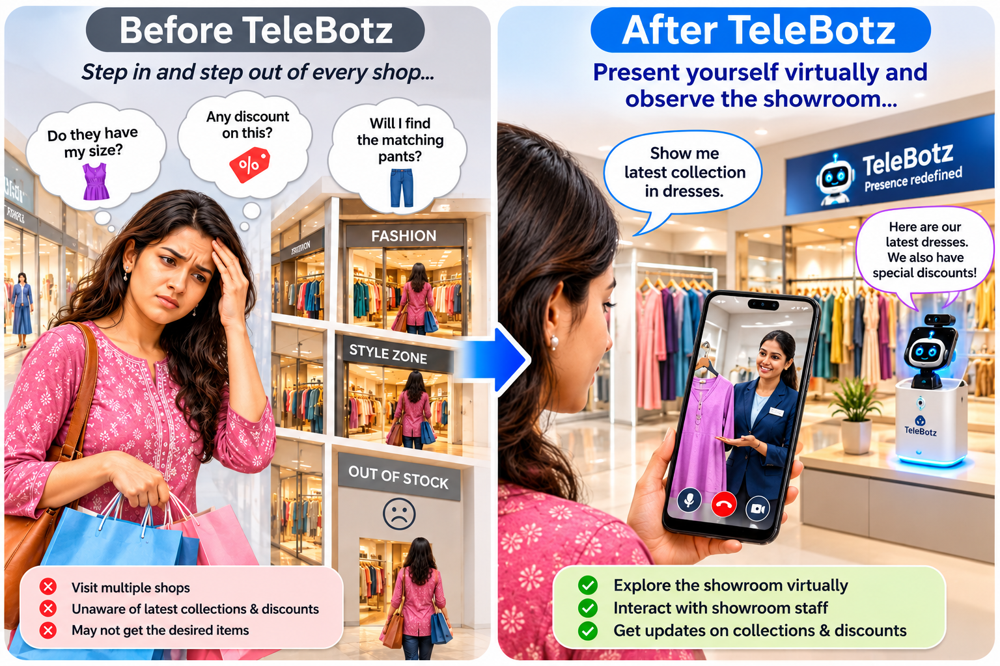

Repeated store visits
Customers may have to step into and out of several shops just to compare options or find matching tops, pants, and accessories.
MixedLine Shopping
Enjoy Online Flexibility. Experience Offline Personalised Service.

Customers often move between showrooms to find a particular style, matching item, size, or price. They may not know which stores have the latest collections, current discounts, or the item they are looking for.
Customers may have to step into and out of several shops just to compare options or find matching tops, pants, and accessories.
They may miss updated collections, available sizes, new arrivals, and discounts because this information is not always visible before visiting.
A visit can end without a purchase when the desired item, size, colour, or matching product is not available.
Travelling between stores and browsing without knowing what is available can make shopping unnecessarily time-consuming.
With TeleBotz, customers can present themselves virtually and look around a showroom from their own location. A real staff member at the showroom can interact with them, showcase products, and provide personalised assistance.
The customer connects to the showroom through TeleBotz using a smartphone.
The customer observes the showroom and gets a feel for its collections and displays.
A real staff member can greet the customer, answer questions, and showcase suitable products.
Customers can ask about matching products, sizes, availability, new arrivals, and current offers.
TeleBotz supports product discovery and personalised interaction. After exploring, customers remain free to choose how they wish to proceed with their purchase.
Explore before travelling, interact with real staff, discover matching products, check availability, and learn about collections and discounts.
Present products to remote customers, offer a more personal digital touchpoint, highlight new arrivals and promotions, and help interested shoppers discover the right items.
Bring TeleBotz into your showroom and explore a more connected way to engage customers.
Discuss this use case